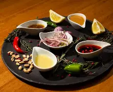
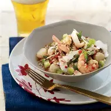
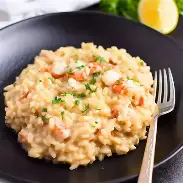

Una experiencia gourmet donde la tradición se encuentra con la innovación en cada plato. Descubre nuestra propuesta culinaria única que combina técnicas ancestrales con ingredientes contemporáneos.
Explorar Recetas
Tres pilares fundamentales que definen nuestra experiencia culinaria
Descubre nuestras recetas fusionadas paso a paso, con técnicas profesionales y secretos culinarios transmitidos por generaciones.
Platos únicos que combinan ingredientes locales con técnicas internacionales de alta cocina, renovados cada temporada.
Conoce a nuestro equipo y la filosofía que inspira cada creación en nuestro restaurante. Eventos especiales y clases magistrales.
Descubre cómo crear platos fusionados en tu propia cocina con nuestras recetas paso a paso

Pescado blanco marinado en leche de coco, limón, cilantro y chile tailandés. Una fusión peruano-asiática refrescante.

Arborio con maíz, queso cotija, cilantro y un toque de ají amarillo peruano. Cremosidad italiana con alma latina.
Postre fusión que combina chocolate belga con cardamomo, anís y pimienta rosa. Un viaje de sabores en cada bocado.
¿Tienes preguntas, quieres reservar una experiencia gastronómica o tienes alguna sugerencia?
Calle Fusión 123, Distrito Gourmet
Ciudad Capital, CP 12345
+1 (555) 123-4567
info@gastronomiafusion.com
Martes a Domingo: 12:00 - 23:00 hrs
Lunes: Cerrado